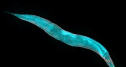

Novosti
Sklonište za životinje
U skloništu je dom trenutno pronašlo preko tristo pasa, kako štenaca i mladih pasa, tako i odraslih pasa. Svaki od njih ima svoju tužnu priču. Ostavljeni, zlostavljani, izgladnjeli, izbačeni iz automobila prije godišnjeg odmora svojih vlasnika, u očima još uvijek imaju nadu da će pronaći novi dom.Više.
Znanstvenici koktelom lijekova životinjama duplo produljili život
ZNANSTVENICI su uspjeli eksperimentalnim koktelom već postojećih lijekova skoro za dvostruko produljiti životni vijek testiranim životinjama, javlja Science Alert.Više